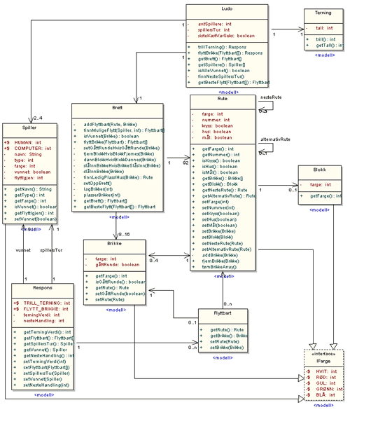

Spillet er laget med en to-lagsarkitektur.
Modellen, som du finner i pakken ludo.modell, er selve spillet.
Grensesnittet er et eget lag, og ligger i pakken ludo.grensesnitt.
Her kan du lese
javadoc
til Ludo.
Du kan derfor lett erstatte alt i pakken ludo.grensesnitt
med dine egne java-klasser, og få et helt annet grensesnitt
basert på den samme modellen.
Designklassediagram av modellen. Ludo er controller-klassen.
Klikk på bildet for større visning.

For å bruke modellen må du i hovedsak bruke
følgende tre metoder fra klassen Ludo:
trillTerning(), flyttBrikke(Flyttbart)
og getBrett().
getBrett()-metoden kan brukes for å få tilstanden
til alle brikkene på brettet. getBrett() returnerer
en array av Flyttbart-objekter, som lagrer alle brikkene,
og hvilke ruter de forskjellige brikkene står på.